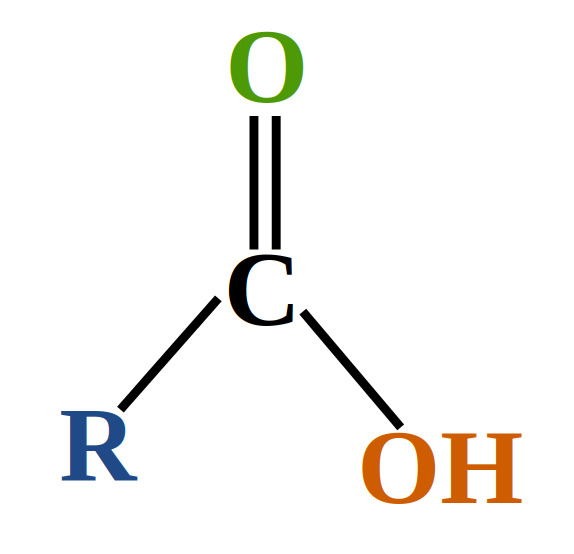

Axit cacboxylic

Image source: Topic 1 image sources
| Vietnamese | Axit cacboxylic |
|---|---|
| English | Carboxylic acid |
| Pronunciation | /ˌkɑːbəʊˈsɪlɪk ˈæsɪd/ |
| Word type | Danh từ (Noun) |
Meaning (Vietnamese)
Axit cacboxylic là hợp chất hữu cơ trong phân tử có nhóm carboxyl (–COOH) liên kết với nguyên tử carbon hoặc nguyên tử hydrogen.
Meaning (English)
an organic acid that contains a carboxyl group (–COOH).
Example
Carboxylic acids contain a carboxyl group and can react with bases.
Axit cacboxylic chứa nhóm carboxyl và có thể phản ứng với bazơ.
Source of information: Topic 1 notes (see Sources)